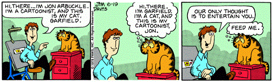
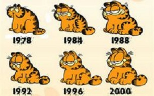

Some Facts You Didn't Know About Garfield:
- Jon Arbuckle was mentioned as a cartooonist in the first comic published in 1978. 
- Jon Arbuckle was originally going to be the main character, but the company Jim Davis worked for forced him to make it about the cat instead.
- Originally, Jon Arbuckle didn't own Odie. His friend owned him, but his friend lived with Jon.
- About 4 percent of the world's population reads Garfield on a daily basis.
- Garfield would be about 37 years old if he were a real cat. That is 18 years above his maximum lifespan.
- Garfield's favorite food is lasagna, but in Malaysia, there is a Garfield Pizza Cafe.
- Jim Davis's first comic strip was about a bug.
- Garfield was named after Jim Davis's grandfather.
- The Chicago Sun Post originally cancelled the strip, but readers protested, so they brought it back.
- Garfield wasn't Jim's only comic strip.
- There was going to be an amusement park built for Garfield, but it was scrapped later.
- Bill Murray agreed to do the Garfield movie because he thought it was written by one of the Coen Brothers, famous movie director.
- Davis's first job was as an assistant for the Tumbleweed's comic, another comic strip.
- Jim Davis once had 25 cats when he lived on a farm, hence the idea of a cat in his comic strip.
- Garfield had once been able to scare kids, like in the Halloween edition of the strip.
- Garfield takes place in Muncie, Indiana, where his grandfather lived.
- The characters in the strip evolved over time. 
- Garfield has over 17 million Facebook fans.
- The comics were made for marketing and marketing only, not for entertainment.
- Garfield is a tabby cat with orange and black stripes.